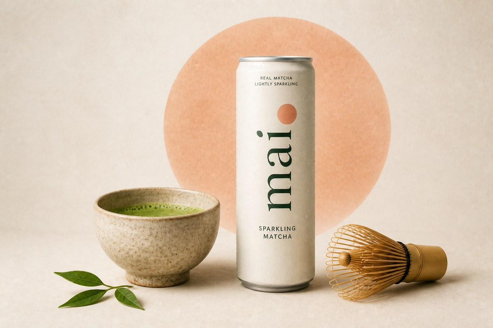
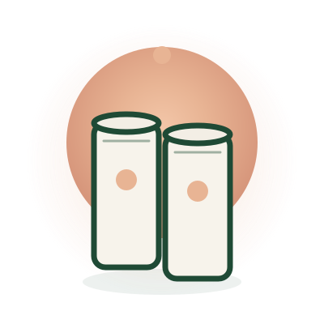

Most energy drinks
are loud.
Mai is deliberate.
We built Mai for clear mornings, deep work, and long days that demand steadiness over spikes. Real matcha. Light carbonation. Zero sugar rush.
Join the first drop
Clear mornings.
Deep work.
No crash.
The can
Still. Light. Real matcha.

The people
Sam and Stephen met in college.
Both like the idea of caffeine more than what it usually does to them — the jitter, the crash, the drinks that treat energy like a stunt. They wanted something they could open on a clear morning and still feel like themselves at four in the afternoon.
Matcha was the closest. The sparkling cans on the shelf were not. Too loud. Too sweet. Too much like soda wearing a green costume.
So they made Mai. Lightly sparkling. Real matcha. A light sweetness. Built for deep work and long days, not for a spike. That’s the whole story. Two friends. One drink they actually wanted to keep around.
The drink
Not an energy drink. Not a heavy latte.
Mai is premium lightly sparkling matcha. Clean and short: water, real matcha, a light touch of sweetness, quiet carbonation. Calm energy you can take with you.
- Real matcha. The kind meant for focus — not flavoring in a loud can.
- Light carbonation. Crisp enough to feel awake. Soft enough to sip through work.
- Lightly sweetened. About 4g per can. A little lift. Not a sugar rush.
Join the first drop.
Early access when we launch. Flavors as they come. Member pricing for the list.
Get first-drop access